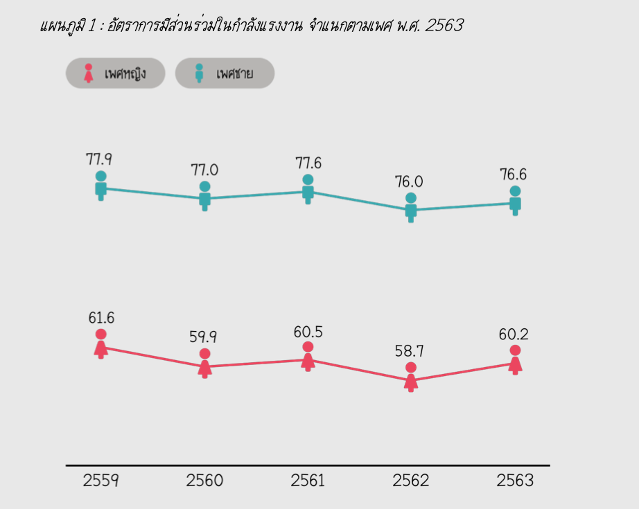
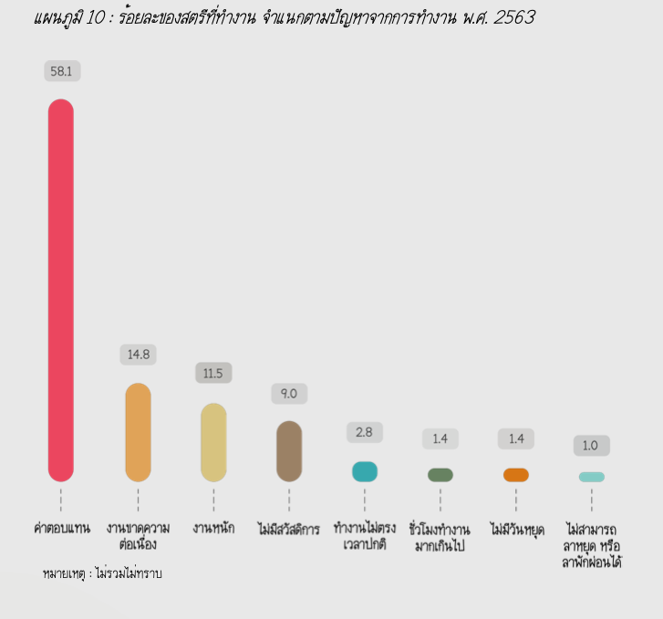

ในปัจจุบัน องค์กรต่าง ๆได้เล็งเห็นความสามารถในการ ทํางานของสตรี มีการส่งเสริมและให้โอกาสการทํางานมากขึ้น แต่เมื่อพิจารณาอัตราการมีส่วนร่วมในกําลังแรงงานของสตรี จะเห็นได้ว่า แนวโน้ม ยังคงไม่เปล่ียนแปลงจากปีท่ีผ่าน ๆ มา อีกท้ังสตรียังคงมีอัตราการมีส่วนร่วมในกําลัง แรงงานท่ีต่ำกว่าชายเช่นเดิม

สำหรับอาชีพของสตรีที่ทํางานปี 2563 พบว่า ส่วนใหญ่ประกอบอาชีพ ผู้ปฏิบัติงานท่ีมีฝีมือในด้านการเกษตร ร้อยละ 28.2 รองลงมาเป็นพนักงานบริการ และผู้จําหน่ายสินค้า ร้อยละ 26.6 ในขณะท่ีอาชีพที่ผู้ชายทํามากกว่าผู้หญิง คือ ช่างฝีมือ ผู้ควบคุมเครื่องจักรโรงงาน และ ผู้บัญญัติกฎหมาย ข้าราชการอาวุโส
ปัญหาจากการทํางาน พบว่า แรงงานสตรีมีปัญหาจากการทํางานสูงที่สุดคือ ปัญหาเกี่ยวกับค่าตอบแทน (เช่น ค่าตอบแทนไม่เหมาะสม ได้รับค่าตอบแทนล่าช้า ได้รับ ค่าตอบแทนไม่เต็มจํานวนที่ตกลงกันไว้ ไม่ได้รับค่าตอบแทน ไม่มีอํานาจต่อรอง ค่าตอบแทนหรือถูกโกงค่าตอบแทน เป็นต้น) ร้อยละ 58.1 รองลงมา คือ งานขาดความ ต่อเนื่อง
